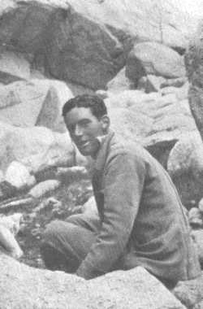

MOST of us met Van Noorden when he came up to Clare in 1922 he was quiet and only his desperate attraction towards the hills would make him talkative. To know him more intimately was to appreciate his quiet; or imperturbability as it would perhaps be better explained; in rain, in wind, on difficult rock or on easy rock he had the same happy calm, from which only the worst mountaineering betises could disturb him. Before he came up he had had a very meagre season in the Dauphine and finding no one to lead him in the Lakes in the following Easter vacation he constrained .html beginner to invest in a rope and to tackle some of the ' moderates.' Those who started their own climbing career, and they are legion, by leading their own parties can remember the ecstacy of their first ascent; whatever satisfaction one may have derived from later climbs one cannot recall the same complete happiness of the first step along the endless road of becoming a mountaineer. From this time the hills had V.N. in their exacting thrall; every vacation found him wandering among them and more of his time in terms than pleased his tutor was spent in reading about them and discussing any aspect of Mountaineering theoretical or practical.
In the Summer of 1923 he came to the Club Meet; after twelve days of perfect weather he went southwards with L. A. Ellwood into the Cottians. Next term we heard his tale; they had been marched out of Italy at the point of the revolver by a gendarme who would not trust them. After three days climbing, V.N. could indeed look villainous; his hair never sleek, stood on end, terrifying in appearance, but to be thrown out of Italy for it was one of his happiest memories. By devious routes they won across the border and came upon a village whose male population was without exception drunk; they were informed by their hostess as she locked them in their bedroom to prevent the intrusion of revellers, that this happened regularly every Saturday to Monday.
They returned to Switzerland and climbed at Saas Fee and then at Zermatt. V.N. was left at Zermatt as six weeks had left him without funds, which was the only cogent reason for him to leave the hills, so that he was compelled home. Unfortunately the evening before he went was fine; he had a return ticket from Paris to London and by careful calculation he computed the bare amount needed to land him home, literally penniless; with the remainder he found he had just enough to hire a guide and buy provisions, which he did. Next day he traversed the Ober Gabelhorn and caught the evening train down the valley - home.
That Christmas (1923) he was one of the instigators of a camp in Wastdale, the like of which for pure jest was never equaIled; from there we went to Wales and climbed until the beginning of term. In summer I924, there occurred, what to him was a tragedy; having obtained a first in Part I. Natural Science, he was informed by his tutor that if he wished to read Part II. Physics he would have to stay up for the long vacation term; he managed however to get out for the C.U.M.C. meet, but bad luck seemed to dog them. He and his party got mixed up with bad weather and the French military manoeuvres They managed to cross the Chasseforet in a blizzard and prove to their own satisfaction that if they marched carefully on a compass they could be accurate. His party hoping for better weather went South to the Dauphine, but the season was impossible and they came home.
We went to camp in Wales to finish the Vacation. The first night our tent blew into Llyn Llydaw and we were forced to spend the rest of our time in the Cottage just below Glaslyn; � the roof had to be mended; coal fetched over the Bwlch from Llanberis and the fire lit, which when lit put us through a species of smoke curing, but amid it all he seemed in his element; he lost his quaint reserve and told ghost stories or argued about the more obscure theories of mountaineering.
Next term he came up as President of the C.U.M.C. and as such he will be best remembered by many of us. He made an excellent president; he knew personally nearly every member of the Club who climbed. Every Sunday he held a mountaineering breakfast which lasted from about 9 a.m. till mid-day and was open to all who cared to come, and he would be prepared to talk "climbing" at anytime with anybody.
At Easter, Dr. Clark Kennedy, he and I spent a delightful holiday in Scotland; we packed food up to the half-way hut on Ben Nevis and spent a cold fortnight there; it was not comfortable but it was difficult even to grumble when V.N. regarded it as part of the game. We did no climb, but we had three attempts on the Tower ridge and on the last we made an Alpine start with the dawn and spent eleven hours of the best climbing we had together.
In the Summer we started in the Argentiere basin; attempted the Tour Noir in unspeakable weather and were turned by a justly indignant peak; we then turned our attention to the Chamonix district but without any success, except for an attempt on the Aig. Verte and the Dent de Geant. Going up the Geant ice-fall an incident occurred which is rather illustrative of his imperturbability.
By misfortune he dropped down a crevasse his pocket book containing all his money; on looking in we could see nothing, but he decided to descend; by using the crevasse as a chimney for thirty feet, he landed on a snow bridge and on looking over he saw his pocket book on an unstable snow patch some thirty-6ve feet below. The crevasse was now too narrow for back and foot work, so that by means of a rope ladder made from the spare rope, he climbed down and after an hour's delay he re-appeared over the lip successful and triumphant.
We then went to Courmayeur and climbed the Aiguille Noire and from thence over Mt. Blanc by the Brouillard ridge to Chamonix.
He conducted a most successful meet at Arolla and his ability to get his reluctant party off in the early morning was not the least of his attributes.
Dr. Clark-Kennedy, Edwin Kempson, he and I crossed over to Zermatt, but the weather became impossible. However, he led us up the Ober Gabelhorn only to meet with snow and wind; the descent was his last piece of Alpine work and it was difficult enough; the weather became worse and we decided to finish our Vacation in Wales.
We stayed some thirty miles from Snowdon and we went over every day by any means of transit on which we could lay our hands. On September 2nd at 6.3o, he left the farm where we were staying to try and make a girdle traverse of Clogwen-y-person with H. R. C. Carr. My last recollection was V.N. in his beloved climbing coat pedalling down the road to Beddgelert.
Many of
us feel the loss at the outset of our climbing career of a friend and
a leader.